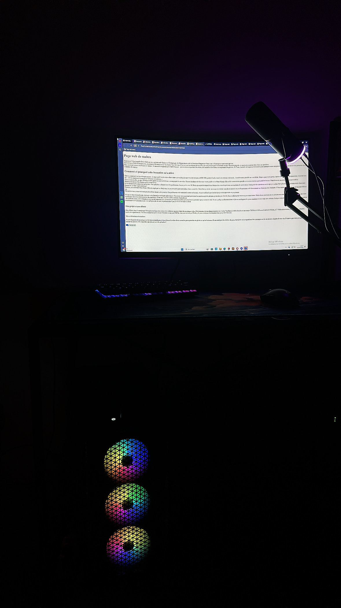
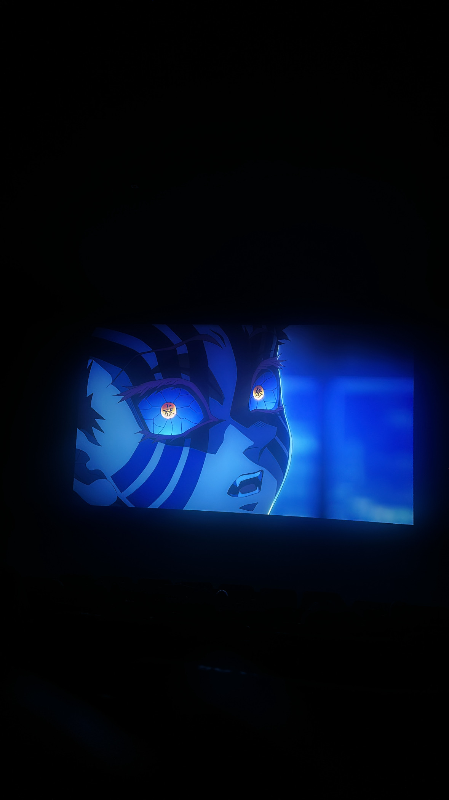

Bienvenue ! Je m'appelle Kebe Mahra je suis en terminale Science et Technologie du Management et de la Gestion a Marguerite Yourcenar a Morangis et voici mon univers.
Né le 13 mai 2008 à Longjumeau, j'ai grandi à Morangis où je vis depuis l'âge de 4 ans. C'est ici, sur les terrains de ma ville, que ma passion pour le football est née. Depuis tout petit, ce sport est ce qui me fait vibrer au quotidien.
Mais mon univers ne s'arrête pas au terrain. Je suis aussi un grand passionné d'images : que ce soit en regardant des séries, des animes et des films, ou en prenant des photos.
À 17 ans, j'ai créé cet espace avec le cœur pour partager toutes ces passions qui m'animent et vous permettre de me connaître davantage
Tout a commencé sur les réseaux sociaux. Je suis tombé sur la vidéo d'une dame qui expliquait super bien la formation MMI. Elle parlait d'audiovisuel, de création et de code... honnêtement, ça a été un vrai déclic. Depuis que je suis petit, c’est ce monde-là qui me passionne, et je me suis dit : « C'est exactement ce qu'il me faut pour mon avenir. »
Pour en savoir plus, je suis allé à la journée porte ouverte le 8 février, accompagné de ma mère. On a eu la chance de faire une visite guidée avec Mme Mianja. Elle a été vraiment très gentille avec nous et nous a présenté les locaux. Franchement, on a tout de suite accroché à l'établissement et à l'ambiance qu'il y avait là-bas.
Le moment le plus important pour moi, c'est quand on a discuté avec les professeurs. J'ai pu parler avec M. Pirat, qui a pris le temps de me donner des conseils précieux sur ma lettre de motivation. Il m'a posé des questions sur ce que je voulais faire plus tard et sur mon avenir dans cette formation. C'était super motivant !
Ensuite, j'ai rencontré Mme Guez. Elle m'a expliqué en détail tous les projets qu'on pouvait réaliser dans sa matière. J'ai même pu tester un casque de réalité virtuelle et essayer un jeu d'innovation créé directement en classe par des étudiants. C'était incroyable de voir ce qu'on peut réaliser ici.
Ma mère et moi, on a vraiment pris du plaisir durant cette journée. Ces professeurs ont vraiment le cœur sur la main, et ça a confirmé que c'est ici que je veux apprendre et progresser.
Ce qui m'attire énormément, c'est que cette formation est hyper polyvalente. Comme je suis passionné par toutes les matières qu'elle propose, je me dis que c'est la chance idéale pour tout essayer et tout tester. Grâce à ces exercices et ces projets concrets, je vais pouvoir acquérir une vraie expérience dans tous les domaines du numérique. Pour moi, c'est le meilleur moyen de progresser
.Au-delà des cours, cette formation correspond vraiment aux valeurs que je veux transmettre plus tard et à la personne que je veux devenir. Je suis quelqu'un d'ouvert à tout et j'ai envie d'apprendre pour construire mon avenir avec sérieux. Intégrer cette école, c'est pour moi l'opportunité de transformer mes passions en un vrai métier et de devenir le professionnel que je rêve d'être dans le futur
.
Au-delà de mes montages, je tenais à vous montrer que je suis vraiment prêt à m'investir pleinement dans cet IUT.J'habite à Morangis, ce qui est à seulement 12 km de votre établissement. Comme j'ai déjà mon permis de conduire, je pourrai venir facilement pour être toujours présent à l'heure. Et même s'il m'arrive un souci avec ma voiture, j'ai déjà tout prévu : en transports, c'est environ une heure de trajet avec seulement deux bus à prendre.
C'est une distance que j'assumerai sans aucun problème, je suis prêt à faire le déplacement chaque jour parce que je veux vraiment réussir.C’est une formation qui me plaît énormément, et ce, dans tous ses aspects. Je veux vraiment réussir mon année et donner le meilleur de moi-même.
je suis actuellement le capitaine de mon équipe de foot U18 à Massy. Cette responsabilité au quotidien m'a beaucoup appris sur le leadership et l'esprit d'équipe. Je suis quelqu'un de sociable, respectueux et calme. Dans tout ce que je fais, je reste travailleur et toujours à l'écoute des conseils pour progresser.
Avant de parler de montage ou de trucs compliqués, j'aime bien m'arrêter deux secondes pour prendre en photo ce qui m'entoure. Ce ne sont pas des clichés de pro, c'est juste mon regard sur des paysages ou des moments simples de ma vie. J'espère que vous prendrez autant de plaisir à les regarder que j'en ai eu à les prendre !


On enchaîne avec mes montages Après les photos, je vous montre mes vidéos. C'est là que je me fais vraiment kiffer. J'adore ce que je fais et j'aime tester des trucs pour voir ce que ça donne. J'espère que vous aimerez mon univers !
⚠️ MESSAGE IMPORTANT À LIRE ! ⚠️
Salut à tous ! Petit rappel nécessaire si vous souhaitez visionner mes vidéosi jamais vous voyez s'afficher le message "Erreur 153 : Erreur de configuration du lecteur", ne vous inquiétez surtout pas !
C'est tout à fait normal ! Faites bien attention : vous avez juste à cliquer directement sur la vidéo pour qu'elle s'active et se lance normalement juste après.
Un immense merci d'être restés jusqu'ici et d'avoir pris le temps de parcourir mon site. Je suis sincèrement heureux que vous ayez pu regarder mon travail jusqu’au bout. Ce projet, c'est bien plus qu'un simple exercice pour moi : c'est une part de ma passion et j'y ai mis tout mon cœur. Au fond, je pense qu'en découvrant mes vidéos, vous apprenez à me connaître bien mieux qu'en lisant simplement ma lettre de motivation.